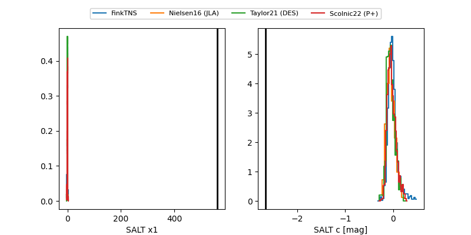

FINK: ZTF25abnmujh
Lasair: ZTF25abnmujh
ALeRCE: ZTF25abnmujh
ZTF25abnmujh (ztf,fink)
equatorial (ra, dec) = (302.7618,-13.36712)
galactic (l, b) = (29.5078,-23.58935)

last ztfg=18.84
3 ztfg detections